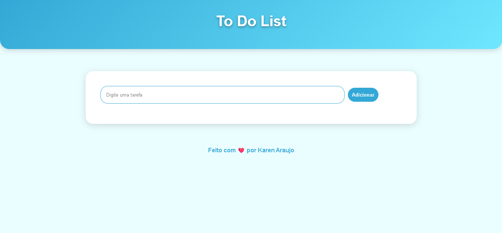

To Do List
Sobre o Projeto
Este projeto foi criado utilizando Javascript, HTML e CSS.
O projeto é uma página simples de lista de tarefas onde o usuário pode inserir itens na lista usando o botão “Adicionar”.
A interface é minimalista e direta ao ponto, ideal para quem quer organizar pequenas tarefas rapidamente sem complicações.
Imagem do Projeto

Tecnologias Utilizadas
- HTML5
- CSS3
- Javascript
- Git e GitHub
Conceitos praticados
- Eventos dom
- Funções em Javascript
- HTML semântico
- Variáveis CSS
- Responsividade com media queries